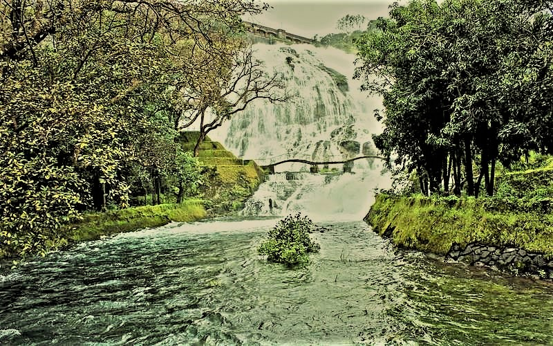
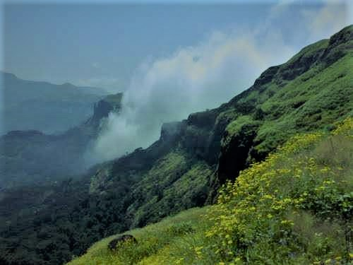

TOURIST PLACES
1.BHATSA RIVER VALLEY

PLACE DAITAILS:
Bhatsa River Valley is a stunning spot in Igatpuri. Located at the end of the Thal Ghat, the valley lies in the basin of the Bhatsa River. The river flows through the thick vegetation of the valley is an enjoyable spectacle. The hills, the woods, the lustrous foliage and the river make it a picturesque spot. There is a temple, Ghatandevi Mandir, which is dedicated to the Ghat goddess. The valley will calm your mind and rejuvenate your body with its unsullied atmosphere. Bhatsa River Valley is close to the Camel Valley.
BEST TIME TO VISIT IGATPURI
The average minimum and maximum temperature of Igatpuri is as given below. The best time to visit Igatpuri is also specified.
| MONTH | BEST TIME | MIN.TEMP(�C) | MAX.TEMP(�C) |
|---|---|---|---|
| January | best time | 24�C | 32�C |
| February | best time | 22�C | 31�C |
| March | best time | 21�C | 31�C |
| April | 18C | 34�C | |
| May | 22�C | 36�C | |
| june | 20�C | 36�C | |
| july | 20�C | 36�C | |
| August | 21�C | 32�C | |
| September | 23�C | 32�C | |
| October | 30�C | 39�C | |
| November | best time | 29�C | 30�C |
| December | best time | 26�C | 33�C |
2.BHANDARDARA
PLACE DAITAILS:
Bhandardara, a hill station nestled in the Sahyadri ranges of Maharashtra, has all the nature's blessings a place can get. The lush greenery, the humble waterfalls and surrounded by high mountains makes for the perfect holiday spot for city dwellers. Situated in the Ahmednagar district of Maharashtra, Bhandardara is 117 km. from Mumbai and is easily accessible through roadways. This little village is packed with so many attractions coupled with the serenity of the nature that it makes for an adventurous weekend to run away from the hustle and bustle of the cities.
What is the best time to visit Bhandardara?
Although suitable for a visit any time of the year, Bhandara unveils its spellbinding charm in the monsoon months of June till September when the climate is cool and breezy as opposed to the summer when it's quite hot and humid. Temperatures range between 20 degrees C to 30 degrees C. Hence, the months between June and March tend to be an ideal time to visit Bhandardara. The downpours during these months create breathtaking sights for one to explore.
3.KALSUBAI PEAK
Kalsubai Peak, Bhandardara Overview
Mt. Kalsubai is the highest peak of the Sahyadri Ranges. The view of this majestic mountain is an amazing sight in Bhandardara. It is also known as the Everest of Maharashtra, as it is the highest peak in the state. The trek is a very tricky one and usually the experienced trekkers find their way to the top with some difficulty. There are now man-made stairs to reach the peak if you don't wish to trek. However, the hills near the Kalsubai peak are relatively easier to scale.
Trek Routes
ase village, we need to move in the direction of the peak till we come across a stream of water. After crossing the stream, we come across a small temple. The route which goes up from behind this temple terminates at the top of the fort. The local villagers have put up three large ladders to make the entire trek easier. After climbing through two ladders, we reach a small plateau and a well adjoining it. The climb through the third ladder from this point is a simple affair from this point. This last ladder takes us to the peak of the fort.
4.RANDHA FALLS

Randha Falls, Bhandardara Overview
Another waterfall attraction in Bhandardara is the Randha Falls of the Pravara river. The clear water of the Pravara river ferociously falls from a height 170ft into a magnificent ravine. However, this waterfall is only attractive in the monsoons.
At a distance of 10 km from Bhandardara Bus Stop, 156 km from Pune & 177 km from Mumbai, Randha Falls is a beautiful waterfall located on the Rajur - Bhandardara road in Ahmednagar district of Maharashtra. The waterfall is formed over Pravara River and cascades down from a height of 170 feet into a beautiful gorge. Considered as one of the prominent waterfalls in India, the jaw-dropping Randha Falls is a must visit place during monsoon and also one of the popular places to visit in Bhandardara. It is the chief source of hydro power in the Bhandardara region. There is a temple on the banks of the river and a viewpoint just above the falls provides a great view of the waterfalls. The rocky sides of the gorge are home to colonies of bees and one can see huge hanging hives under the rocky ledges.
5.VIPASSANA CENTER
Welcome to Dhamma Giri - Vipassana International Academy
Dhamma Giri, meaning �Hill of Dhamma�, is one of the world�s largest meditation centres and the main centre of a rapidly growing global Vipassana organization. It is dedicated to the teaching of Vipassana Meditation as taught by S.N. Goenka in the tradition of Sayagyi U Ba Khin.
What is Vipassana?
Vipassana, which means to see things as they really are, is one of India's most ancient techniques of meditation. It was taught in India more than 2500 years ago as a universal remedy for universal ills, an Art of Living. Vipassana is the process of self-purification by self-observation. One begins by observing the natural breath to concentrate the mind. Then, with a sharpened awareness, one proceeds to observe the changing nature of body and mind and experiences the universal truths of impermanence, suffering and egolessness. This truth-realization by direct experience results in mental purification.
Centre Location
Dhamma Giri is situated in the town of Igatpuri which is 45 km away from Nashik and 136 km away from Mumbai, on Mumbai-Agra Highway. It is well connected by central railway line. Geographically it is situated 20 N latitude and 74 E Longitude and altitude of 599 m above mean sea level. For more information on Dhamma Giri visit The Centre Page.
6.GHATANDEVI TEMPLE

Ghatandevi Temple, Igatpuri Overview
A little ahead of Igatpuri, crossing the camel valley, a small road leads to the famous temple of Ghatandevi. It is said that this deity is known as 'the protector of the ghats'. Behind the temple lies the Tringalwadi Fort.
Ghatandevi Mandir is a temple dedicated to Ghatan Devi - the protector of hills. The temple is located in a gorgeous valley with the majestic peaks of Harihar, Durvar Utvad and Trimbak forming a striking backdrop. The peaceful environment here has made the Mandir a popular attraction and has included it in the list of places to visit in Igatpuri.